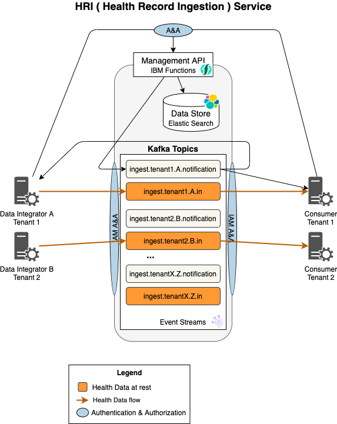

Health Record Ingestion service¶
The HRI is a deployment ready service for streaming Health-related data into the IBM Cloud. It provides a “front door” for “Data Integrators” to send data into the cloud, while supporting both batch-processing and data streaming workflows. It provides features to initiate and track the movement of a dataset for both “Data Integrators” and “Data Consumers”.
The key features are:
- Streaming - all data is streamed
- Batch support - a collection of health data records can be streamed and processed together
- Multitenancy - supports segregation of data by tenant and Data Integrator
Key Technologies¶
- Event Streams, an IBM Cloud-based Apache Kafka managed service, is the technology used for producing and consuming the data streams
- Using IBM Cloud Functions, HRI exposes a Serverless RESTful Management API that is used to control and configure the system
- Elasticsearch is the distributed NoSQL data store that is used to store information about batches
IBM Cloud Dependencies¶
The HRI was developed on the IBM Cloud and currently does not support running on other public or private clouds. However, as a part of Alvearie, the goal is to support other public and private clouds, which the team continues to work towards.
Core Architecture¶

Topics¶
Health data, which may include PHI, is written to and read from the Kafka topics. There must be separate topics for each tenant and Data Integrator in order to meet data separability requirements. A set of four topics is used per Stream of data that flows through the HRI.
Data Integrators write data to and Data Consumers read data from the *.in topic. Batch status notifications are written to the *.notification topic.
Batches¶
Health Record Datasets often have requirements to be processed together “as a set” (partially or in their entirety) when moving the data into the cloud. Hence, HRI has been built with support to process a dataset as a Batch. See Batch for a detailed definition.
How much data goes in a batch is really up to the solution. The HRI Management API provides support for starting, completing, terminating, and searching for batches. Any change to a batch results in a message being written to the associated notification topic in Kafka.
Data Format¶
HRI does not impose any requirements on the format of the Health Data records written to Kafka. There is a separate effort to define a common FHIR model for PHI data.
However, The HRI does require the batchId to be in the record header. Data Integrators may include any number of additional custom header values that they wish to pass onto data consumers. An example of a custom header value might be something like originating_producer_id, an originating data producer (or org) ID value that may need to be communicated to the data consumers.
Additional Reading¶
- Processing Flows
- API specification
- Multi-tenancy
- Deployment
- Administration
- Authorization
- Monitoring & Logging
- Troubleshooting
- Releases
- Glossary
Questions¶
Please contact these team members for further questions:
- David N. Perkins, Team Lead: david.n.perkins@ibm.com
- Aram S. Openden, Maintainer: aram.openden1@ibm.com
Contributors¶
- Alisa Kotliarova: alisa@ibm.com
- Daniel Baxter: djbaxter@us.ibm.com
- Fred Ricci: fjricci@us.ibm.com